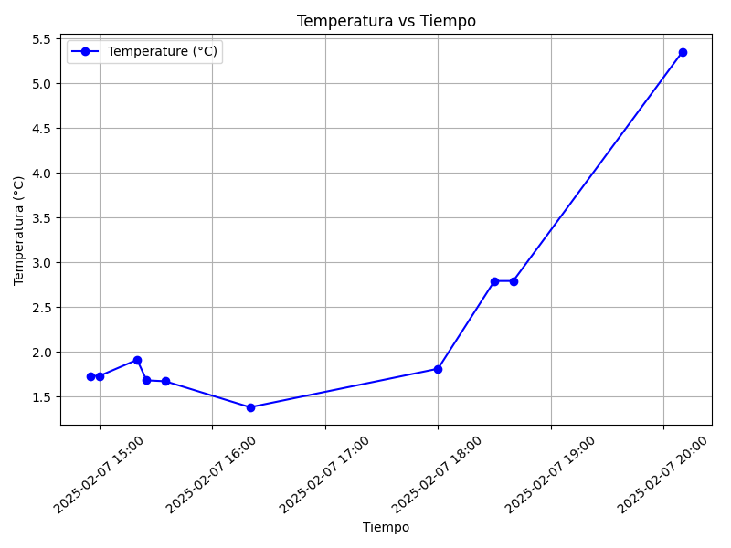
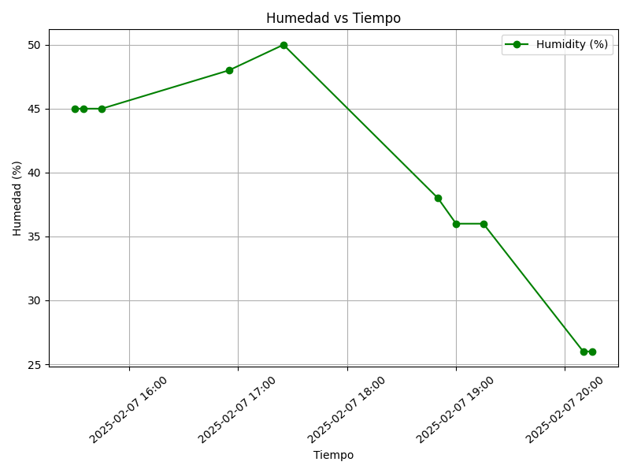

Proyecto ICCD332 Arquitectura de Computadores
1. City Weather APP
Este es el proyecto de fin de semestre en donde se pretende demostrar las destrezas obtenidas durante el transcurso de la asignatura de Arquitectura de Computadores.
- Conocimientos de sistema operativo Linux
- Conocimientos de Emacs/Jupyter
- Configuración de Entorno para Data Science con Mamba/Anaconda
- Literate Programming
1.1. Estructura del proyecto
Se recomienda que el proyecto se cree en el home del sistema operativo i.e. home/<user>. Allí se creará la carpeta CityWeather CIUDAD: TOKIO
mkdir TokiooWeather cd TokioWeather pwd
/home/adx09byron/TokioWeather
cd TokioWeather
touch main.py
touch get-weather.sh
touch clima-tokio.csv
ls
clima-tokio.csv get-weather.sh main.py main.py~ weather-site
cd TokioWeather mkdir weather-site cd weather-site pwd
/home/adx09byron/TokioWeather/weather-site
cd TokioWeather cd weather-site mkdir content cd content pwd
/home/adx09byron/TokioWeather/weather-site/content
cd TokioWeather cd weather-site mkdir public cd public pwd
/home/adx09byron/TokioWeather/weather-site/public
cd TokioWeather cd weather-site cd content mkdir images cd images pwd
/home/adx09byron/TokioWeather/weather-site/content/images
cd TokioWeather cd weather-site cd public mkdir images cd images pwd
/home/adx09byron/TokioWeather/weather-site/public/images
El proyecto ha de tener los siguientes archivos y subdirectorios. Adaptar los nombres de los archivos según las ciudades específicas del grupo.
.
├── TokioTemperatureAnalysis.ipynb
├── clima-tokio.csv
├── get-weather.sh
├── get-weather.sh~
├── main.py
├── main.py~
├── output.log
└── weather-site
├── build-site.el
├── build.sh
├── content
│ ├── images
│ │ ├── humidity.png
│ │ └── temperature.png
│ ├── index.org
│ └── index.org~
└── public
├── images
│ ├── humidity.png
│ └── temperature.png
└── index.html
6 directories, 16 files
Puede usar Emacs para la creación de la estructura de su proyecto
usando comandos desde el bloque de shell. Recuerde ejecutar el bloque
con C-c C-c. Para insertar un bloque nuevo utilice C-c C-, o M-x
org-insert-structure-template. Seleccione la opción s para src y
adapte el bloque según su código tenga un comandos de shell, código de
Python o de Java. En este documento .org dispone de varios ejemplos
funcionales para escribir y presentar el código.
1.2. Formulación del Problema
Se desea realizar un registro climatológico de una ciudad \(\mathcal{C}\). Para esto, escriba un script de Python/Java que permita obtener datos climatológicos desde el API de openweathermap. El API hace uso de los valores de latitud \(x\) y longitud \(y\) de la ciudad \(\mathcal{C}\) para devolver los valores actuales a un tiempo \(t\).
Los resultados obtenidos de la consulta al API se escriben en un archivo clima-<ciudad>-hoy.csv. Cada ejecución del script debe almacenar nuevos datos en el archivo. Utilice crontab y sus conocimientos de Linux y Programación para obtener datos del API de openweathermap con una periodicidad de 15 minutos mediante la ejecución de un archivo ejecutable denominado get-weather.sh. Obtenga al menos 50 datos. Verifique los resultados. Todas las operaciones se realizan en Linux o en el WSL. Las etapas del problema se subdividen en:
- Conformar los grupos de 2 estudiantes y definir la ciudad objeto de estudio.
- Crear su API gratuito en openweathermap
- Escribir un script en Python/Java que realice la consulta al API y escriba los resultados en clima-<ciudad>-hoy.csv. El archivo ha de contener toda la información que se obtiene del API en columnas. Se debe observar que los datos sobre lluvia (rain) y nieve (snow) se dan a veces si existe el fenómeno.
- Desarrollar un ejecutable get-weather.sh para ejecutar el programa Python/Java.1
- Configurar Crontab para la adquisición de datos. Escriba el comando configurado. Respalde la ejecución de crontab en un archivo output.log
Realizar la presentación del Trabajo utilizando la generación del sitio web por medio de Emacs. Para esto es necesario crear la carpeta weather-site dentro del proyecto. Puede ajustar el look and feel según sus preferencias. El servidor a usar es el simple-httpd integrado en Emacs que debe ser instalado:
- Usando comandos Emacs:
M-x package-installpresionamos enter (i.e. RET) y escribimos el nombre del paquete: simple-httpd - Configurando el archivo init.el
(use-package simple-httpd :ensure t)
Instrucciones de sobre la creación del sitio web se tiene en el vídeo de instrucciones y en el archivo Org-Website.org en el GitHub del curso
- Usando comandos Emacs:
- Su código debe estar respaldado en GitHub/BitBucket, la dirección será remitida en la contestación de la tarea
1.3. Descripción del código
En esta sección se debe detallar segmentos importantes del código desarrollado así como la estrategia de solución adoptada por el grupo para resolver el problema. Divida su código en unidades funcionales para facilitar su presentación y exposición.
1.4. Lectura del API
import requests import csv from datetime import datetime API_KEY = 'cf5170790aefceeddddf59694618d580' LATITUDE = 35.682839 LONGITUDE = 139.759455 URL = f'http://api.openweathermap.org/data/2.5/weather?lat={LATITUDE}&lon={LONGITUDE}&appid={API_KEY}&units=metric' response = requests.get(URL) data = response.json() print(data)
{'coord': {'lon': 139.7595, 'lat': 35.6828}, 'weather': [{'id': 801, 'main': 'Clouds', 'description': 'few clouds', 'icon': '02d'}], 'base': 'stations', 'main': {'temp': 5.81, 'feels_like': 3.09, 'temp_min': 4.94, 'temp_max': 7.17, 'pressure': 1008, 'humidity': 26, 'sea_level': 1008, 'grnd_level': 1006}, 'visibility': 10000, 'wind': {'speed': 3.6, 'deg': 270}, 'clouds': {'all': 20}, 'dt': 1738978774, 'sys': {'type': 2, 'id': 268395, 'country': 'JP', 'sunrise': 1738964125, 'sunset': 1739002496}, 'timezone': 32400, 'id': 1861060, 'name': 'Japan', 'cod': 200}
1.5. Convertir JSON a Diccionario de Python
weather_data = { 'timestamp': datetime.now().strftime('%Y-%m-%d %H:%M:%S'), 'temperature': data['main']['temp'], 'humidity': data['main']['humidity'], 'weather': data['weather'][0]['description'] } print(weather_data)
{'timestamp': '2025-02-07 20:39:45', 'temperature': 5.81, 'humidity': 26, 'weather': 'few clouds'}
1.6. Guardar el archivo CSV
csv_file = "clima-tokio.csv" with open(csv_file, 'a', newline='') as file: writer = csv.writer(file) writer.writerow(weather_data.values()) print("Datos del clima en Tokio guardados correctamente.")
Datos del clima en Tokio guardados correctamente.
1.7. Script ejecutable sh
Se coloca el contenido del script ejecutable. Recuerde que se debe utilizar el entorno de anaconda/mamba denominado iccd332 para la ejecución de Python; independientemente de que tenga una instalación nativa de Python
En el caso de los shell script se puede usar `which sh` para conocer la ubicación del ejecutable
which sh
/usr/bin/sh
De igual manera se requiere localizar el entorno de mamba iccd332 que será utilizado
which mamba
/home/adx09byron/miniforge3/condabin/mamba
Con esto el archivo ejecutable a de tener (adapte el código según las condiciones de su máquina):
#!/bin/bash python3 /home/adx09byron/TokioWeather/main.py
Finalmente convierta en ejecutable como se explicó en clases y laboratorio
chmod +x get-weather.sh
1.8. Configuración de Crontab
Se indica la configuración realizada en crontab para la adquisición de datos
*/5 * * * * cd /home/adx09byron/TokioWeather && ./get-weather.sh >> output.log 2>&1
- Recuerde remplazar <City> por el nombre de la ciudad que analice
- Recuerde ajustar el tiempo para potenciar tomar datos nuevos
- Recuerde que
2>&1permite guardar enoutput.logtanto la salida del programa como los errores en la ejecución.
2. Presentación de resultados
Para la pressentación de resultados se utilizan las librerías de Python:
- matplotlib
- pandas
Alternativamente como pudo estudiar en el Jupyter Notebook
CityTemperatureAnalysis.ipynb, existen librerías alternativas que se
pueden utilizar para presentar los resultados gráficos. En ambos
casos, para que funcione los siguientes bloques de código, es
necesario que realice la instalación de los paquetes usando mamba
install <nombre-paquete>
2.1. Muestra Aleatoria de datos
Presentar una muestra de 10 valores aleatorios de los datos obtenidos.
import pandas as pd # Leer el archivo CSV df = pd.read_csv('/home/adx09byron/TokioWeather/clima-tokio.csv') # Renombrar columnas si es necesario df.columns = ["TIMESTAMP", "TEMPERATURE", "HUMIDITY", "WEATHER"] # Convertir TIMESTAMP a formato datetime df["TIMESTAMP"] = pd.to_datetime(df["TIMESTAMP"]) # Mostrar tamaño del DataFrame print(f"Tamaño de la matriz de datos: {df.shape}") # (filas, columnas)
Tamaño de la matriz de datos: (64, 4)
import pandas as pd # Seleccionar 10 valores aleatorios del DataFrame sample_df = df.sample(10).copy() # Formatear la columna TIMESTAMP para que se vea correctamente sample_df["TIMESTAMP"] = sample_df["TIMESTAMP"].dt.strftime('%Y-%m-%d %H:%M:%S') # Convertir a lista con encabezados para que Org Mode lo muestre bien [["TIMESTAMP", "TEMPERATURE", "HUMIDITY", "WEATHER"]] + sample_df.values.tolist()
| TIMESTAMP | TEMPERATURE | HUMIDITY | WEATHER |
| 2025-02-07 15:45:02 | 1.52 | 45 | clear sky |
| 2025-02-07 17:50:01 | 1.81 | 46 | few clouds |
| 2025-02-07 19:15:02 | 3.7 | 36 | few clouds |
| 2025-02-07 17:55:02 | 1.81 | 46 | few clouds |
| 2025-02-07 19:25:01 | 4.49 | 31 | few clouds |
| 2025-02-07 17:35:02 | 1.25 | 48 | few clouds |
| 2025-02-07 18:25:02 | 2.56 | 43 | few clouds |
| 2025-02-07 16:15:01 | 1.46 | 46 | few clouds |
| 2025-02-07 15:35:00 | 1.67 | 45 | clear sky |
| 2025-02-07 14:55:01 | 1.73 | 45 | clear sky |
import matplotlib.pyplot as plt import matplotlib.dates as mdates import pandas as pd # Leer el archivo CSV df = pd.read_csv('/home/adx09byron/TokioWeather/clima-tokio.csv') # Renombrar columnas si es necesario df.columns = ["TIMESTAMP", "TEMPERATURE", "HUMIDITY", "WEATHER"] # Convertir TIMESTAMP a formato datetime df["TIMESTAMP"] = pd.to_datetime(df["TIMESTAMP"]) # Seleccionar los mismos 10 valores aleatorios utilizados antes sample_df = df.sample(10).copy() # Ordenar por fecha para mejor visualización sample_df = sample_df.sort_values("TIMESTAMP") # Definir el tamaño de la figura fig, ax = plt.subplots(figsize=(8, 6)) # Graficar la temperatura a lo largo del tiempo con los 10 valores aleatorios ax.plot(sample_df["TIMESTAMP"], sample_df["TEMPERATURE"], marker="o", linestyle="-", color="b", label="Temperature (°C)") # Ajustar presentación de fechas en el eje X ax.xaxis.set_major_locator(mdates.AutoDateLocator()) ax.xaxis.set_major_formatter(mdates.DateFormatter('%Y-%m-%d %H:%M')) plt.xticks(rotation=40) # Agregar cuadrícula y etiquetas plt.grid() plt.title("Temperatura vs Tiempo") plt.xlabel("Tiempo") plt.ylabel("Temperatura (°C)") plt.legend() # Ajustar el diseño y guardar la imagen fig.tight_layout() fname = './images/temperature.png' plt.savefig(fname) plt.show() # Mostrar la gráfica en pantalla fname

2.2. Realice una gráfica de Humedad con respecto al tiempo
import matplotlib.pyplot as plt import matplotlib.dates as mdates import pandas as pd # Leer el archivo CSV df = pd.read_csv('/home/adx09byron/TokioWeather/clima-tokio.csv') # Renombrar columnas si es necesario df.columns = ["TIMESTAMP", "TEMPERATURE", "HUMIDITY", "WEATHER"] # Convertir TIMESTAMP a formato datetime df["TIMESTAMP"] = pd.to_datetime(df["TIMESTAMP"]) # Seleccionar los mismos 10 valores aleatorios utilizados antes sample_df = df.sample(10).copy() # Ordenar por fecha para mejor visualización sample_df = sample_df.sort_values("TIMESTAMP") # Definir el tamaño de la figura fig, ax = plt.subplots(figsize=(8, 6)) # Graficar la humedad a lo largo del tiempo con los 10 valores aleatorios ax.plot(sample_df["TIMESTAMP"], sample_df["HUMIDITY"], marker="o", linestyle="-", color="g", label="Humidity (%)") # Ajustar presentación de fechas en el eje X ax.xaxis.set_major_locator(mdates.AutoDateLocator()) ax.xaxis.set_major_formatter(mdates.DateFormatter('%Y-%m-%d %H:%M')) plt.xticks(rotation=40) # Agregar cuadrícula y etiquetas plt.grid() plt.title("Humedad vs Tiempo") plt.xlabel("Tiempo") plt.ylabel("Humedad (%)") plt.legend() # Ajustar el diseño y guardar la imagen fig.tight_layout() fname = './images/humidity.png' plt.savefig(fname) plt.show() # Mostrar la gráfica en pantalla fname

Debido a que el archivo index.org se abre dentro de la carpeta
content, y en cambio el servidor http de emacs se ejecuta desde la
carpeta public es necesario copiar el archivo a la ubicación
equivalente en /public/images
cp -rv ../../weather-site/content/images/* ../../weather-site/public/images/
| '../../weather-site/content/images/humidity.png' | -> | '../../weather-site/public/images/humidity.png' |
| '../../weather-site/content/images/temperature.png' | -> | '../../weather-site/public/images/temperature.png' |
3. Referencias
Notas al pie de página:
Recuerde que su máquina ha de disponer de un entorno de anaconda/mamba denominado iccd332 en el cual se dispone del interprete de Python